China Employee Termination in 2026: Pulse Case-Clinic Brief for Foreign Employers
Key takeaways
- China termination risk is best managed as a case-clinic workflow: diagnose first, intervene second, communicate last.
- Foreign employers reduce exposure when legal, payroll, and communication teams review the same case record at the same time.
- Most costly failures happen at handoff points, not at initial policy interpretation.
- A clinic model turns vague concerns into concrete actions with clear owners and deadlines.
- Legal detail is included in an appendix; this brief stays impact-first.
What changed and why this matters now
Many teams still run terminations as separate functional tasks: legal writes a memo, HR executes, payroll catches up, and managers communicate. This approach works only when facts stay stable. In real cases, facts change and handoffs fail.
This run uses a case-clinic format: three representative case types, each with diagnosis, intervention, and execution checkpoints. It is designed for foreign clients who need a practical operating model, not just a legal summary.
Plain-language legal context first
China’s termination framework requires route-consistent and evidence-consistent execution. For foreign employers, the core rule is practical: if the legal basis, payout worksheet, and manager script are not aligned to the same facts, the case becomes fragile.
National legal principles provide structure, but city-level implementation differences remain important. This means every material case should include a local-interpretation check before communication and payment actions are finalized.
Case clinic: three high-frequency case patterns
Case 1 — “Strong reason, weak record” case
Typical profile: business pressure is high and managers believe the outcome is obvious, but documentary chronology is incomplete.
Clinical diagnosis: legal route confidence is overstated relative to evidence maturity.
Intervention protocol: run a short evidence clinic (ownership check, contradiction resolution, chronology repair), then reassess route confidence.
Operational checkpoint: no employee-facing communication until evidence clinic closes.
Case 2 — “Commercially agreed, operationally unstable” case
Typical profile: separation terms look acceptable, but payout components and IIT assumptions are still moving.
Clinical diagnosis: payroll lock is missing; financial and legal narratives are not synchronized.
Intervention protocol: assign a single worksheet owner, freeze parallel edits, produce one vFinal worksheet with legal/payroll co-sign.
Operational checkpoint: communication scripts refresh only after worksheet lock.
Case 3 — “Executed, but not defensible” case
Typical profile: case appears complete, yet files are fragmented and retrieval is slow.
Clinical diagnosis: closure quality risk; future challenge response would be inefficient.
Intervention protocol: closure remediation sprint with archive index, retrieval test, and final memo standardization.
Operational checkpoint: case is not “closed” until retrieval test passes.
Why this clinic format helps foreign employers
Foreign teams often coordinate across time zones and reporting lines. A clinic format works because it is discussion-ready: each case type gives a diagnosis and treatment plan. It also improves leadership visibility—executives can see whether failures are recurring in evidence, payroll, or closure.
In short, the clinic model converts abstract compliance concerns into manageable operations work.
Practical scenarios
Scenario A: manager asks for immediate action
Case maps to Case 1 profile: strong managerial view, weak chronology.
Action: run evidence clinic before route confirmation.
Scenario B: payout number changes after script draft
Case maps to Case 2 profile: payroll instability.
Action: freeze scripts, complete worksheet lock, then re-brief managers.
Scenario C: post-case query cannot be answered quickly
Case maps to Case 3 profile: closure weakness.
Action: reopen closure workflow and complete retrieval test.
Daily operations SOP (role-by-role)
HR owner: opens clinic track, classifies case type, and coordinates intervention deadlines.
Legal owner: validates route defensibility, local interpretation sensitivity, and route-switch triggers.
Payroll owner: controls payout worksheet versioning, IIT assumptions, and approval records.
Manager owner: follows approved scripts only and logs deviations immediately.
Vendor/EOR owner: supports local practice alignment and closure documentation quality.
Document checklist
- Route memo + fallback triggers + locality note
- Chronology ledger + contradiction log + evidence index
- Payout worksheet vFinal + IIT assumptions + approval chain
- Script pack + spokesperson assignment + escalation language
- Closure memo + archive index + retrieval-test log
Exception handling playbook
- Evidence contradiction late in process: pause and run evidence clinic.
- Payroll conflict near communication: revoke draft versions and relock worksheet.
- Manager off-script communication: launch correction protocol and log incident.
- Archive gap post-payment: reopen closure and complete retrieval test.
System implementation notes
Use one case ID across legal, HR, payroll, and communication artifacts. Add mandatory case-type and intervention-status fields in workflow tools. Block communication tasks when worksheet lock or script refresh is incomplete.
Track monthly clinic metrics: cases by type, intervention turnaround time, post-communication corrections, and retrieval pass rates.
Common mistakes and prevention
- Mistake: skipping diagnosis and jumping to execution.
Prevention: mandatory case-type classification at intake.
- Mistake: multiple active worksheet versions.
Prevention: single-owner payroll lock protocol.
- Mistake: treating closure as filing, not defensibility.
Prevention: retrieval-test gate before final close.
- Mistake: manager communication not tied to latest assumptions.
Prevention: script refresh trigger after any material update.
What to do now
Run a one-week clinic pilot on all active China termination cases. Assign each case to one of the three clinic profiles, document intervention owners, and enforce one control rule: no communication before legal/payroll/script alignment is confirmed.
At week end, review which case type generated the most rework. Use that result to target process training and tooling improvements.
What to watch next
- Whether Case 2 (payroll instability) is the dominant risk driver.
- Whether post-close retrieval failures decline after closure gating.
- Whether city-specific patterns require localized clinic variants.
30-day implementation plan for foreign teams
Week 1 should focus on baselining. Build a case inventory, classify each item into Case 1/2/3, and assign named owners for legal route, payroll lock, and communication lock. The point is not speed at this stage; the point is creating one shared truth set and eliminating parallel, conflicting spreadsheets.
Week 2 should focus on control hardening. Enforce single-version worksheet governance, add script refresh triggers, and require locality notes in every active case. Leadership should review only exception cases rather than all cases, so interventions can be targeted and quick.
Week 3 should focus on closure reliability. Run retrieval tests on recently completed matters and identify where documentation cannot be reconstructed in under 15 minutes. These retrieval failures are often early indicators of future defensibility weakness.
Week 4 should convert findings into permanent SOP updates. Update templates, role charters, and KPI dashboards. The minimum dashboard set should include post-communication correction rate, worksheet reset rate, and closure retrieval pass rate.
FAQ
1) Is clinic format only for complex cases?
No. It improves routine cases too by reducing handoff errors.
2) Can we skip locality checks if national rules are clear?
Not for material decisions; local practice can still affect risk.
3) What is the most common hidden failure?
Late payroll/script mismatch after internal alignment appears complete.
4) How often should clinic status be reviewed?
Daily during active execution and after any material update.
5) Does this framework replace legal advice?
No. It is an operations framework and not legal or tax advice.
6) What KPI shows improvement fastest?
Lower post-communication correction rate usually appears first.
Legal depth appendix (secondary)
This brief is anchored in the PRC Labor Contract Law baseline and supplemented by practitioner and payroll references commonly used by multinational employers. Case outcomes remain fact-sensitive and locality-sensitive. Employers should validate route strategy, payout treatment, and communication language with qualified local advisors in high-impact matters.
Soft CTA
If your team needs compliance-first support for China employee termination, China-Payroll.com can help implement case-clinic governance, payroll lock controls, and defensible closure workflows.
Disclaimer
This content is informational only and does not constitute legal, tax, or employment advice.
Sources
- National People’s Congress of China, Labor Contract Law of the PRC (English), accessed 2026-03-07: http://www.npc.gov.cn/zgrdw/englishnpc/Law/2007-12/13/content_1384064.htm
- ICLG, Employment & Labour Laws and Regulations: China, accessed 2026-03-07: https://iclg.com/practice-areas/employment-and-labour-laws-and-regulations/china
- Littler, Key Recent Developments in China’s Employment Law, accessed 2026-03-07: https://www.littler.com/news-analysis/asap/key-recent-developments-chinas-employment-law-china-us-comparative-perspective
- PwC Tax Summaries, China Individual — Taxes on Personal Income, accessed 2026-03-07: https://taxsummaries.pwc.com/peoples-republic-of-china/individual/taxes-on-personal-income
- China Briefing, China Human Resources and Payroll Guide, accessed 2026-03-07: https://www.china-briefing.com/doing-business-guide/china/human-resources-and-payroll
Need local employment support in China?
If you need a compliance-first partner for hiring, payroll, and risk controls in China, China-Payroll.com can help evaluate the right setup.
Image Prompt Pack
Create a 16:9 hero image for article title: 'China Employee Termination in 2026: Pulse Case-Clinic Brief for Foreign Employers'. Scene: global operations team evaluating workforce model options for China market entry. Include motifs: decision matrix, org chart…